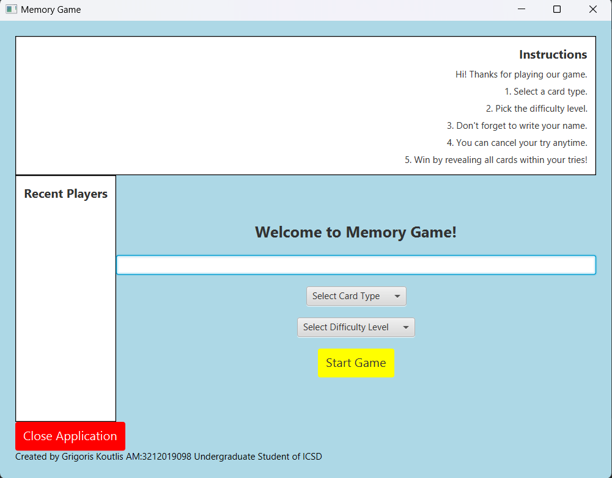
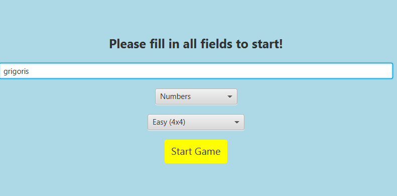
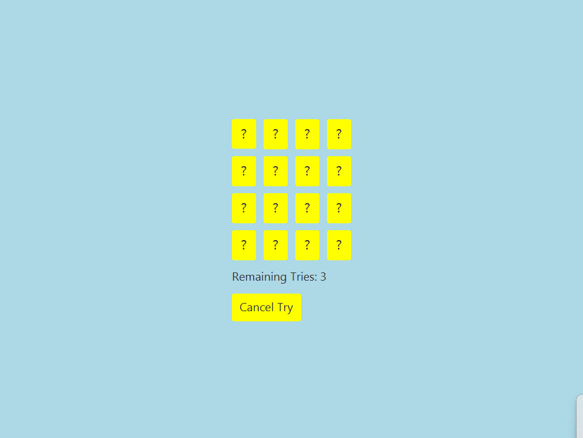
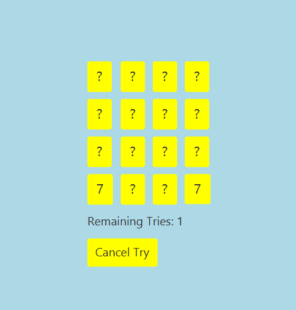
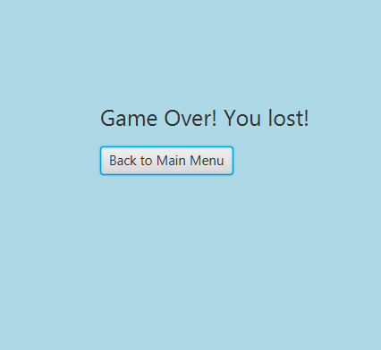

About This Project
The Memory Card Matching Game is a Java-based application developed using JavaFX. It is a classic memory puzzle game where players flip over pairs of cards to find matches. The game provides a graphical user interface (GUI) that allows users to interact with the game board, select difficulty levels, and track their performance. Players must match all card pairs before running out of attempts to win the game.
Key Features:
- ✔ Feature 1: Interactive Game Board. A dynamic grid-based layout where players flip cards to find matching pairs.
- ✔ Feature 2: Multiple Difficulty Levels. Players can choose between 4x4, 8x8, or 10x10 grid sizes for different challenges.
- ✔ Feature 3: Score & Attempt Tracking. The game keeps track of the player's attempts and displays results upon completion.
- ✔ Feature 4: User-Friendly Menu. A main menu that allows users to enter their name, select card themes (numbers, animals, or objects), and start a new session.
- ✔ Feature 5: JavaFX-Based GUI. Smooth animations and visually appealing card-flipping effects enhance user experience.
Java
JavaFX
Visual Paradigm




